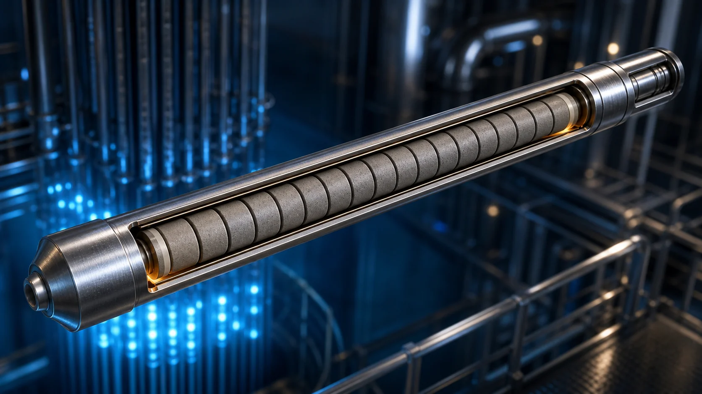
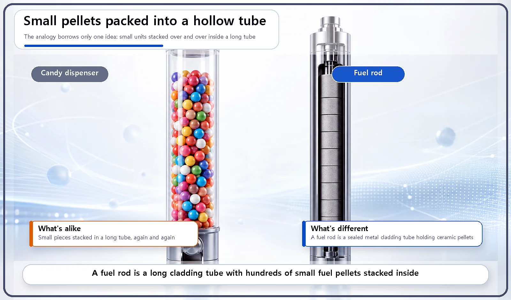
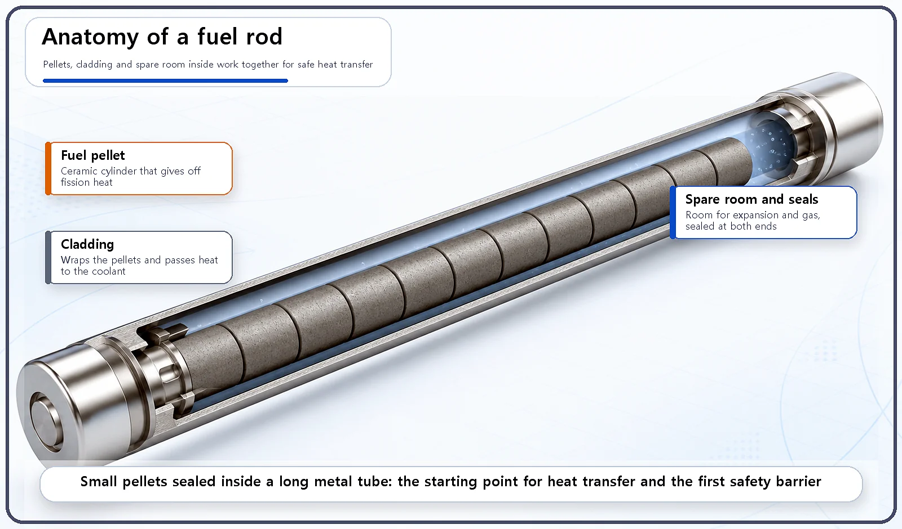

Reactor Components · 052
A PEZ Dispenser in the Reactor Core? — What a Nuclear Fuel Rod Really Looks Like
Not a solid bar: a long cladding tube stacked with hundreds of small ceramic fuel pellets.

A nuclear fuel rod is not a solid bar. It is a long, thin metal tube, the cladding, packed with hundreds of small ceramic fuel pellets about 1 centimeter across. The slim shape moves heat efficiently into the coolant, the pellets make manufacturing and quality control easier, and the sealed tube is the physical form of the first barrier that keeps radioactive material in. [1]
Remember the PEZ dispenser?
It's a long, slim case with little rectangular candies stacked neatly inside. Tip back the head and one candy pops out. Strip that toy down to its basic idea, a hollow tube packed tight with small pieces, and you have something remarkably close to the shape of a nuclear fuel rod.
A hollow tube packed with pellets
A fuel rod is a long, thin metal tube with small cylindrical pellets stacked inside it, one on top of another, with no gaps between them. The tube is called the cladding, and each small cylinder packed inside is a fuel pellet.
A fuel pellet is made by turning uranium into a ceramic (uranium dioxide) and baking it into a small cylinder. It is tiny: about 1 centimeter across and about 1 centimeter tall. Stack hundreds of these pellets end to end inside one tube and you have a single fuel rod. Depending on the reactor type, one fuel rod is typically around 3 to 4 meters long.
Both ends of the tube are sealed tight. Inside, there is a little empty space in reserve, because the pellets expand as they heat up, and the rod is filled with a gas such as helium.

The analogy only borrows the shape, of course. A candy dispenser is designed to let candies out; a fuel rod is a sealed metal tube designed to keep everything in.
| Part | What it is | Typical size |
|---|---|---|
| Fuel pellet | Ceramic uranium dioxide cylinder | About 1 cm across and 1 cm tall |
| Fuel rod | Sealed metal cladding tube holding hundreds of pellets, with spare space and helium fill gas | About 3 to 4 m long (varies by reactor type) |
Why this particular shape?
There's a good reason for making fuel long, thin and cylindrical. That shape has a large surface area, so the heat produced inside the rod can flow out through its surface into the coolant much more efficiently.
You already know this from the kitchen. A pot of thin spaghetti cools down far faster than one thick dumpling of the same weight, because every strand has its own surface exposed to the air. Split the same amount of fuel into many slender rods and you get the same benefit: far more surface touching the coolant, and a much shorter path for heat to travel from the middle of the fuel to the outside.
There's a second advantage to splitting the fuel into small pellets instead of casting it as one big block. Small pellets are much easier to manufacture and handle, and quality can be checked pellet by pellet. Think of a baker who can inspect every cookie on the tray, rather than discovering a flaw only after slicing into one giant cake.

Why the structure matters
The shape and dimensions of a fuel rod are basic inputs for calculating how well heat moves out of the reactor core, how efficiently neutrons are used, and how much safety margin there is.
The fuel pellets (inside) and the cladding (outside) are also made of different materials and do different jobs. This two-part structure is itself the physical form of the first safety barrier that keeps radioactive material locked in.
Two common misconceptions
"A fuel rod is one solid metal bar." No. It's a hollow tube (the cladding) packed with many small ceramic pellets (the fuel pellets).
"A fuel pellet is a big, heavy chunk." No. Each pellet is a small cylinder only about 1 centimeter across and about 1 centimeter tall. It takes hundreds of these small pellets to make a single fuel rod.
Key takeaways
A nuclear fuel rod is a long, thin cladding tube with hundreds of small fuel pellets stacked inside, about 3 to 4 meters long in total. This "hollow tube full of small pieces" design delivers efficient heat transfer, easy manufacturing and pellet-by-pellet quality control, and it forms the first barrier that contains radioactive material.